Part 1: Learn a 2D Flow from Scratch
Task 1: Prepare the source, target, and training pairs
I sampled 2,000 source points independently from a standard two-dimensional Gaussian, so each coordinate has mean 0 and standard deviation 1. My simple target is a spiral.
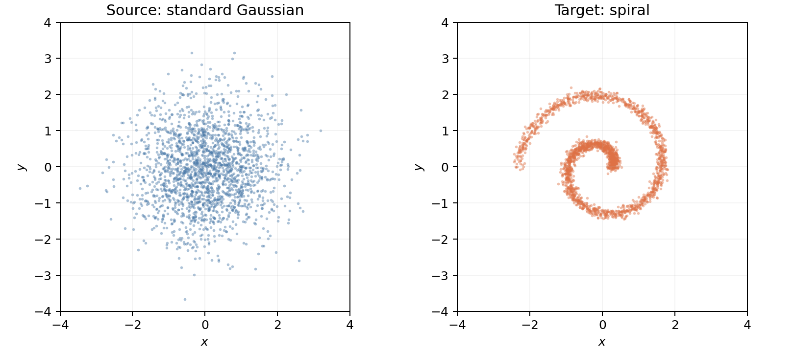
Each source sample was paired with an independently drawn target sample. For each pair, I sampled a separate time uniformly from [0, 1]. The interpolated location and its target velocity are
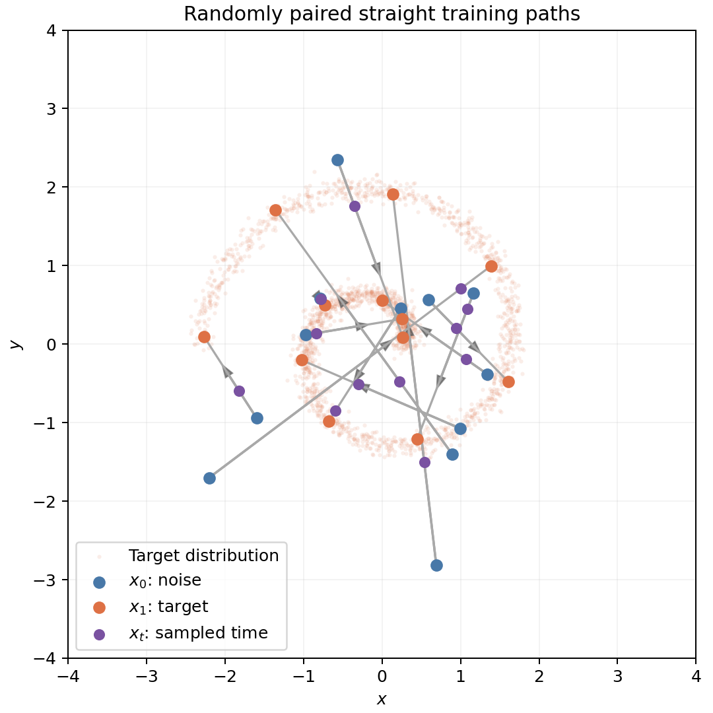
Each training path is straight because its position is a linear interpolation between two fixed endpoints. Differentiating with respect to time gives dxt/dt = x1 − x0, which does not depend on t. Different pairs generally have different velocities.
Task 2: Implement and train the velocity model
The unconditioned model takes the two coordinates of an interpolated point and its flow time, then predicts two velocity components. Its training target is the paired endpoint difference x1 − x0. I used a three-hidden-layer PyTorch MLP with width 128 and SiLU activations (33,794 parameters), Adam at learning rate 0.001, batch size 256, seed 7, and 12,000 steps. Training took 41.9 seconds on the CPU with two threads.
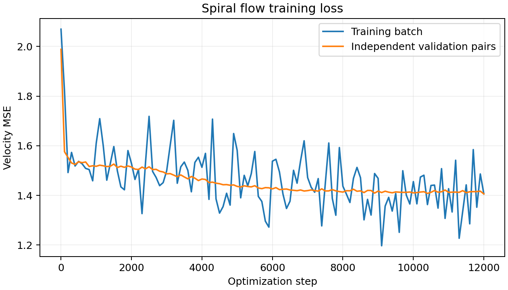
Task 3: Generate new points with the learned field
I sampled 2,000 fresh Gaussian source points and applied 50 forward Euler steps, xk+1 = xk + vθ(xk, tk)/50.

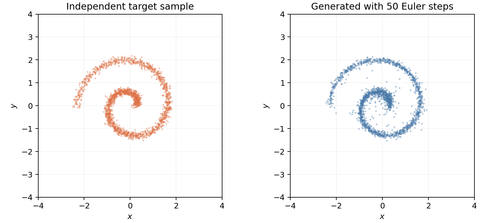
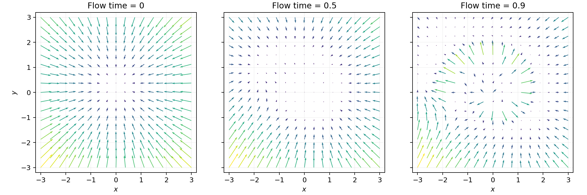
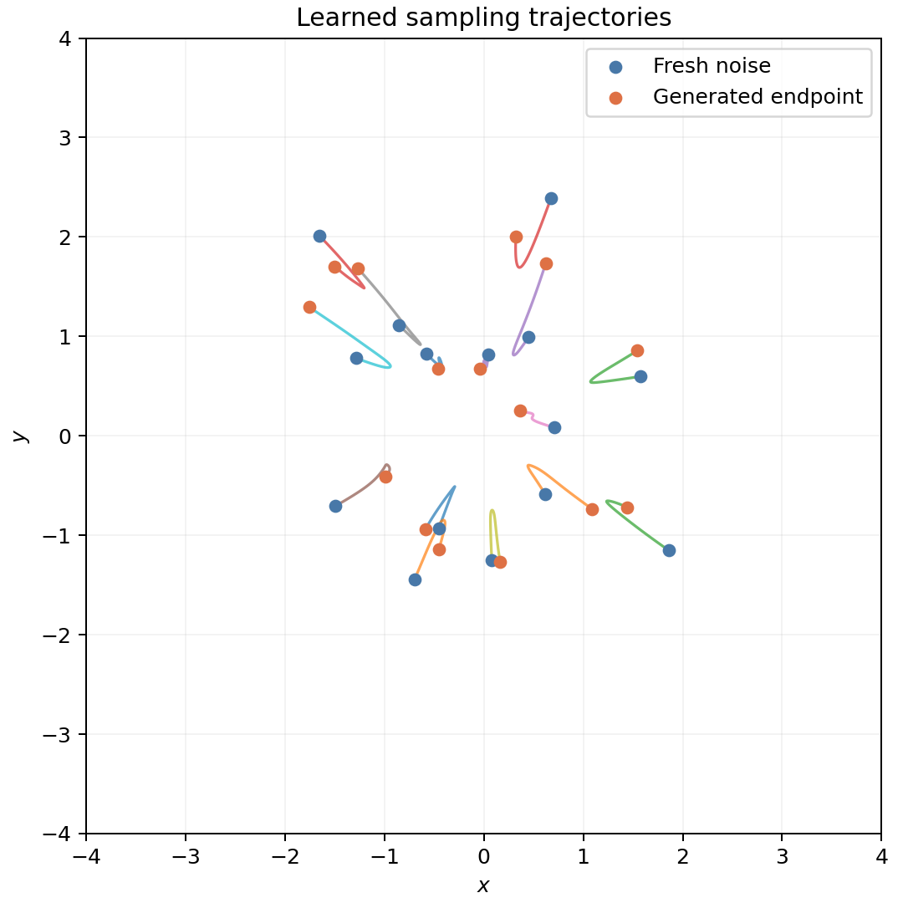
Part 2: Create and Analyze Your Own Animated Demo
Task 1: Choose a creative target
A quick introduction to creep
Creep is a material's gradual deformation while it is held under load, often at an elevated temperature. Imagine hanging a weight from a metal specimen and keeping the weight and temperature steady. The specimen can continue to lengthen over time even though the load has not increased. This slow stretching matters for hot components that must hold their shape for years.
Strain describes how much the specimen has stretched relative to its original length. Strain rate describes how quickly that stretching is happening: it is the slope of the strain-versus-time curve. A creep-rate curve plots this speed against elapsed physical time. A falling rate means stretching slows; a rising rate means it accelerates. The simulation data below use the positive axial plastic strain-rate component, plotted on logarithmic axes because the times and rates span large ranges.
For the creative extension, the target is a distribution of points along 110 simulated creep histories from a model I am using in a research project. The actual creep values are not shown by removing the number labels from the x and y axes. Each point has two plotted coordinates: log10(elapsed time in seconds) and log10(positive axial plastic strain rate in s−1). Each history also has an applied stress and temperature, which are supplied as conditioning inputs to the velocity model.
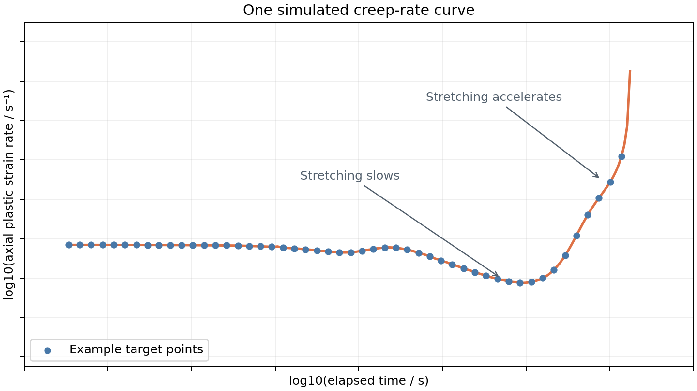
Stress and temperature identify the conditions under which each simulation was run. They change the location and shape of the rate curve, so the model receives both values alongside each two-dimensional point and flow time. The next figure shows how the curves vary across the full set of conditions.
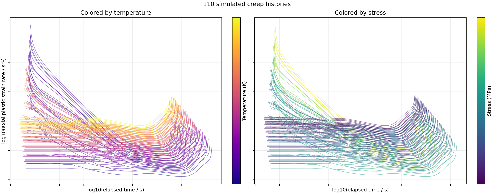
To prepare a balanced point cloud, I used 200 equally spaced log-time locations per curve and interpolated its log strain rate. I kept only positive rates from the constant-stress hold, strictly after each run's loading ramp. This gives 22,000 target points.
Training the conditional velocity model
I split the 110 complete simulation curves into 82 training, 14 validation, and 14 test curves. The model receives the current two-dimensional point, flow time, stress, and temperature (five inputs) and predicts a two-dimensional velocity. It has three hidden layers of width 128 with SiLU activations (34,050 parameters). I used random Gaussian source points and straight training pairs as in Part 1.
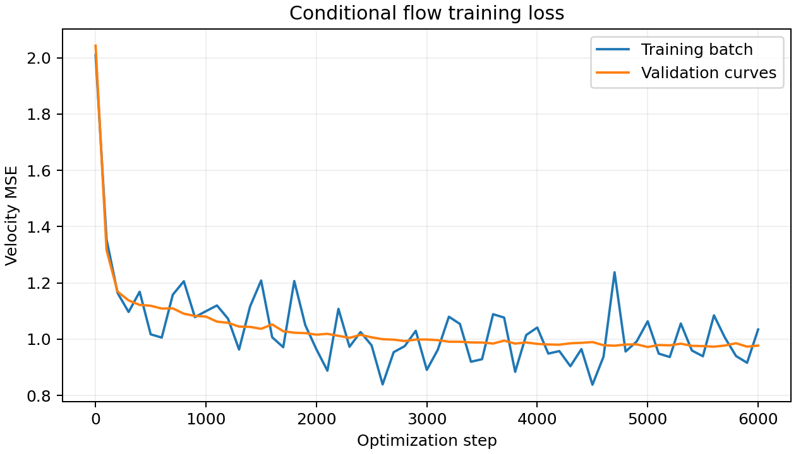
Results at new stress and temperature conditions
For each test stress–temperature condition below, I sampled 1,500 fresh Gaussian points and advanced them through the learned field with 50 forward Euler steps.
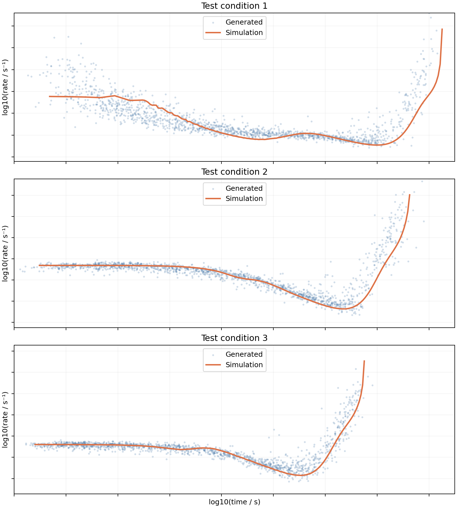
The flow model reproduces the broad decline and late rise, but some areas of the prediction are more broadly dispersed, indicating greater uncertainty in this part of the curve.
Task 2: Animate the learned transport
For a given test condition I tracked the sampled noise through 50 Euler steps. Each scatter point's color is assigned from its generated endpoint's log elapsed time.
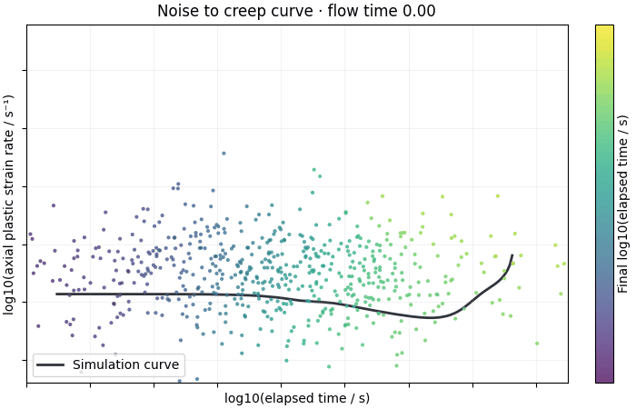
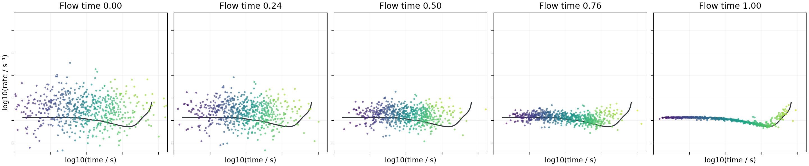
Task 3: Investigate the sampling trade-off
I held the trained weights and the Gaussian points fixed while comparing 1, 5, 10, 25, and 50 Euler steps at three test conditions.
To quantify the accuracy of the predictions, I used a 17 × 13 grid with an x range of log10 time from 0 to 8.5 and y range of log10 rate from −9.5 to −3.0. Histogram total variation (TV) is reported as half the sum of absolute differences between the normalized generated and target bin counts; zero means identical histograms on this grid. No predicted distributions had points outside this histogram grid.
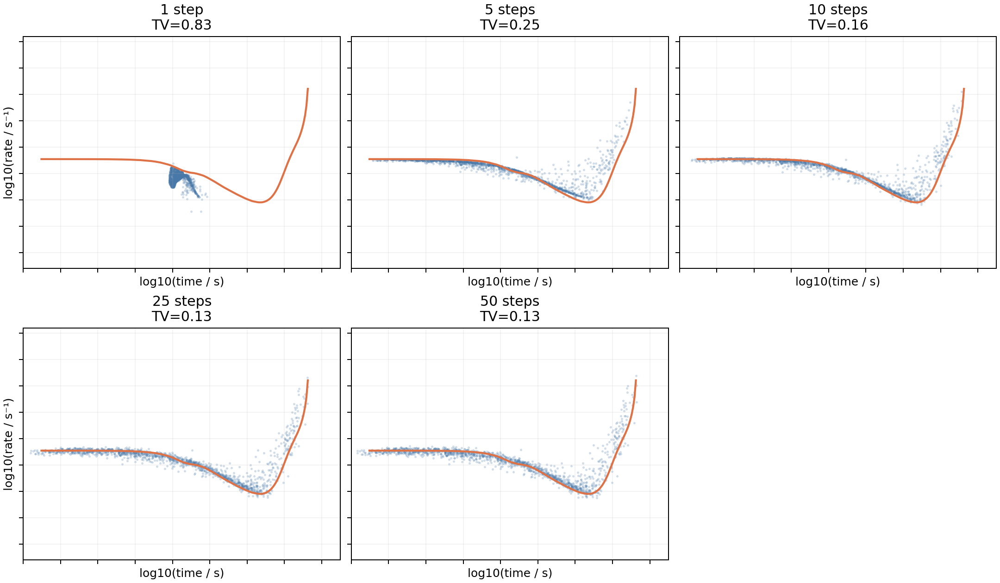
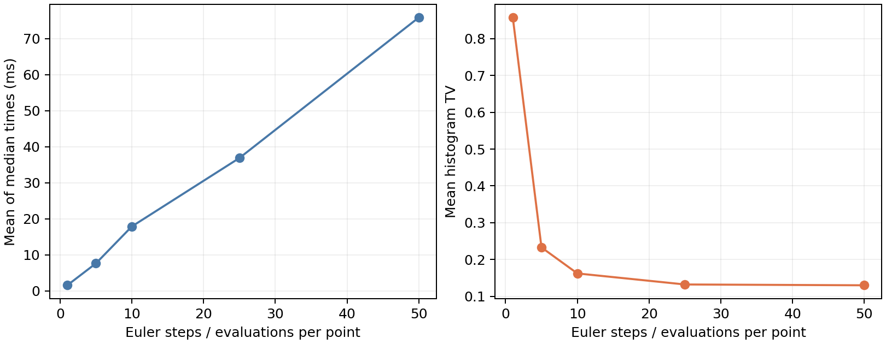
Few steps introduce substantial numerical integration error, especially at one step. From 25 to 50 steps, TV changes only from 0.132 to 0.130 while measured time rises from 36.9 to 75.9 ms. The remaining error for Euler steps of 25 and above may be improved with a larger neural network, which would also increase the cost of calculating the trajectories. The grid-based histogram metric may also be too coarse to accurately measure smaller errors, and a finer grid would likely be required to capture smaller errors.
Part 3: Does Reflow Straighten the Paths?
Task 1: State a hypothesis and construct a reflow dataset
Hypothesis. A second model trained on the baseline's own source-to-endpoint pairs will follow straighter paths and reach a similar target distribution with fewer Euler steps. I froze the baseline model from Part 2. For each of the 82 training conditions, I drew 200 new Gaussian source points and advanced each through the baseline with 100 Euler steps. I saved every source together with its own generated endpoint and the associated stress and temperature: 16,400 training pairs. I made 2,800 analogous pairs from the 14 validation conditions for loss monitoring. The 14 test conditions remained untouched. Pair generation took 2.0 seconds on the CPU.
Task 2: Train and compare a reflow model
I trained one reflow model with the same five-input, two-output architecture as the baseline. For each saved pair, the training location is (1 − t)x0 + tx1 and the velocity target is x1 − x0. The paired endpoints were never shuffled or replaced by the simulation target. The reflow model used Adam, learning rate 0.001, batch size 256, seed 31, and 6,000 steps. Training took 14.2 seconds.
Comparison on test conditions
For each of the 14 test conditions, I used the same 1,000 fresh Gaussian points for the baseline and reflow models. I compared 1, 5, 10, 25, and 50 Euler steps. For each condition, an independent sample of 1,000 target points came from its interpolated simulation curve. Histogram TV uses the same 17 × 13 grid and outside bin as Part 2. Figure 17 shows means over the 14 conditions.
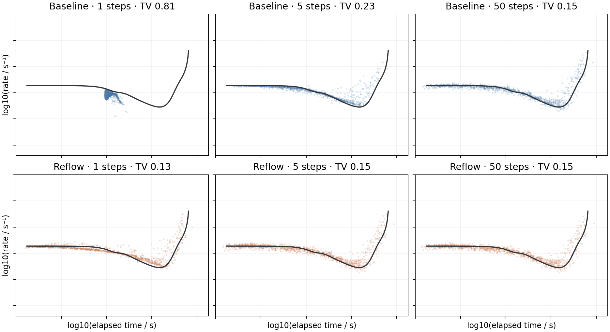
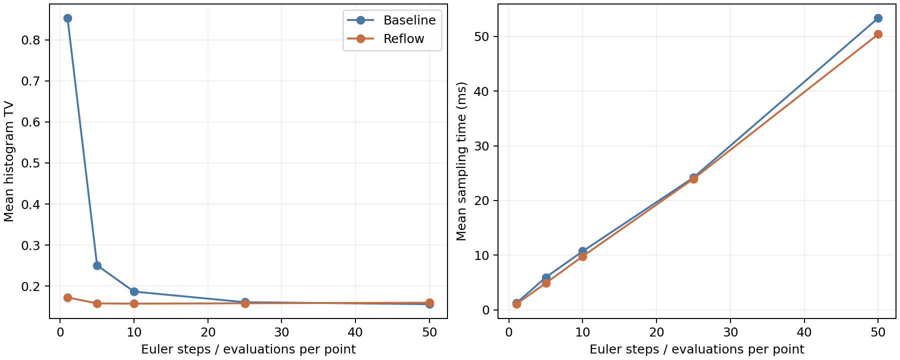
Are the paths actually straighter?
I sampled each model on the same fine 100-step grid and measured, in standardized model coordinates, each particle's traveled path length minus the straight-line distance between its start and end. A perfectly straight path has an excess of zero. The mean excess across 1,000 particles and all 14 test conditions was 0.2005 for the baseline and 0.0005 for reflow. Therefore, the reflow model is significantly straighter than the baseline model.
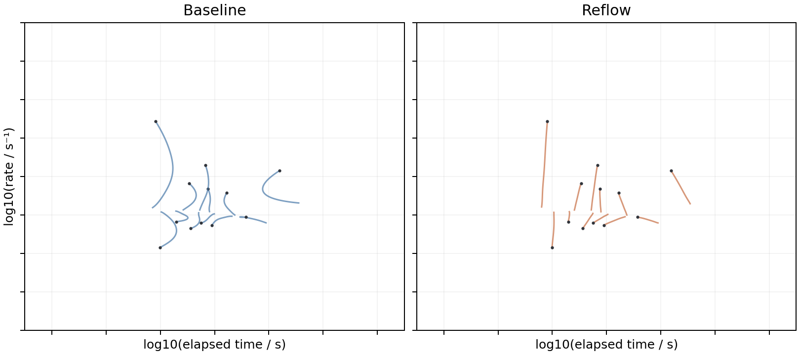
Task 3: Analyze what the evidence supports
The results support the path-straightening part of the hypothesis across 14 test conditions. Reflow reaches mean TV 0.158 with five steps, close to the baseline's 0.156 with 50, at about one-eleventh the measured inference time (4.9 versus 53.4 ms for 1,000 points per condition). One-step reflow is also much better than one-step baseline, though its mean TV 0.173 still exceeds the baseline's 50-step value. At 50 steps, reflow does not improve on the baseline's target TV. This is consistent with reflow learning endpoints generated by the baseline, including their errors, meaning it the reflow model cannot perform better than the baseline, it can only be more efficient.